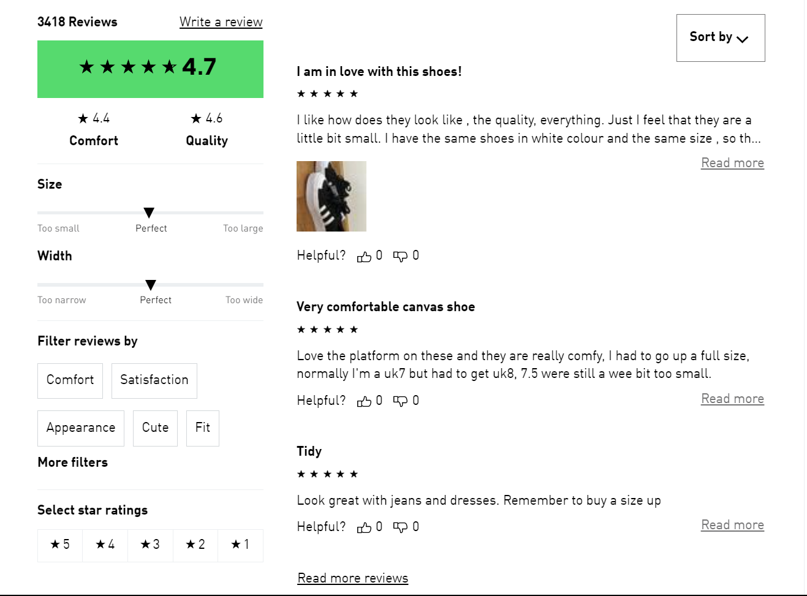
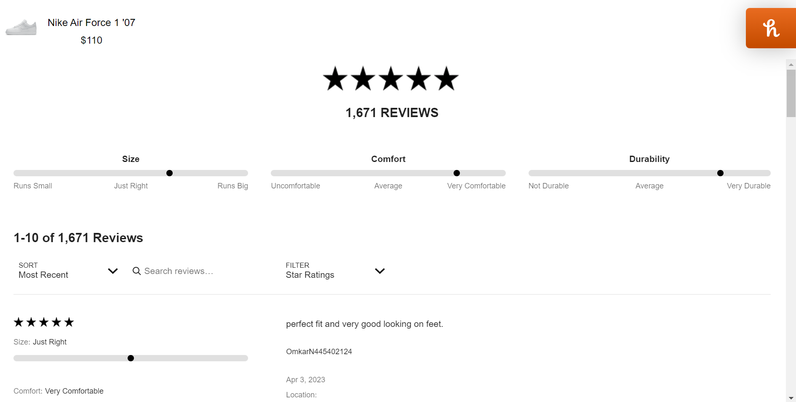
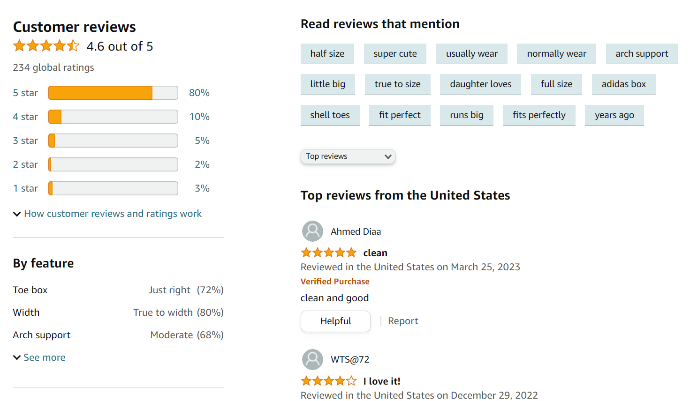
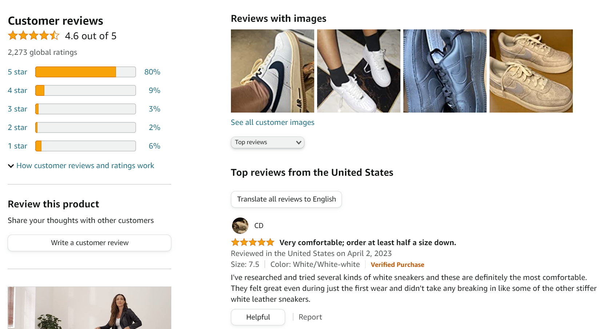
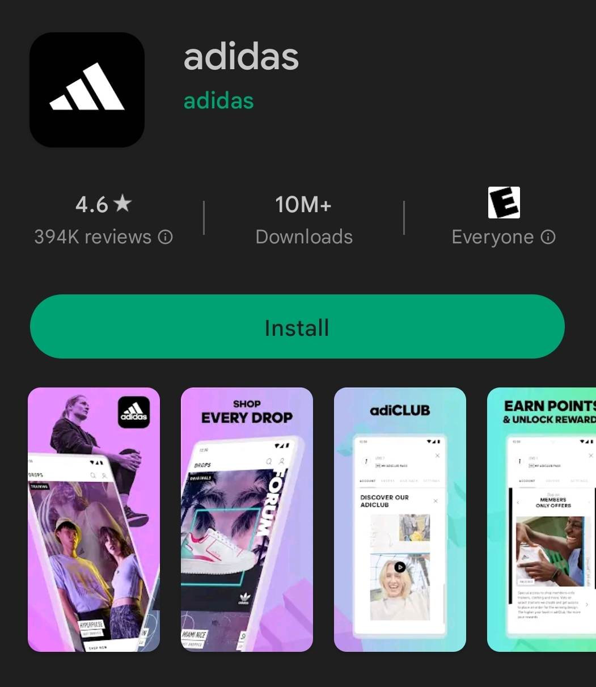
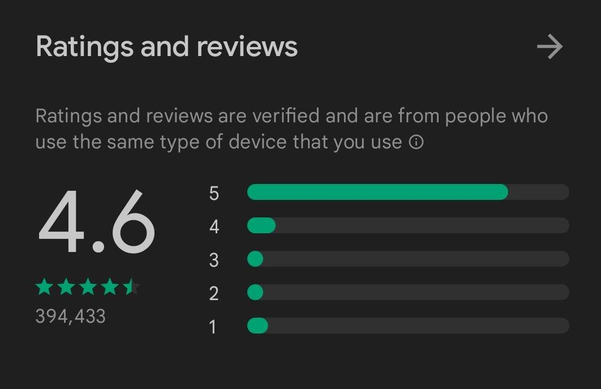
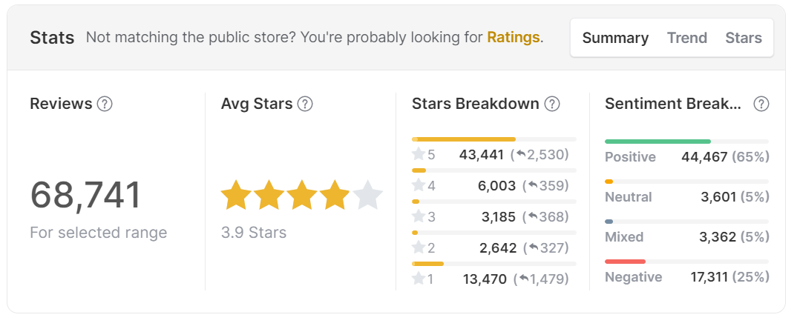
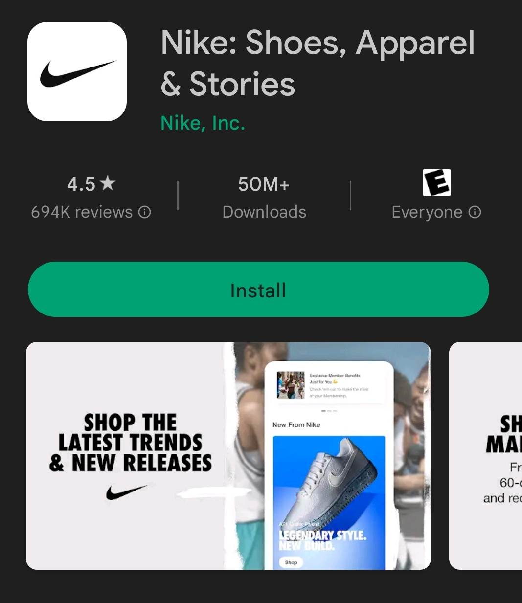
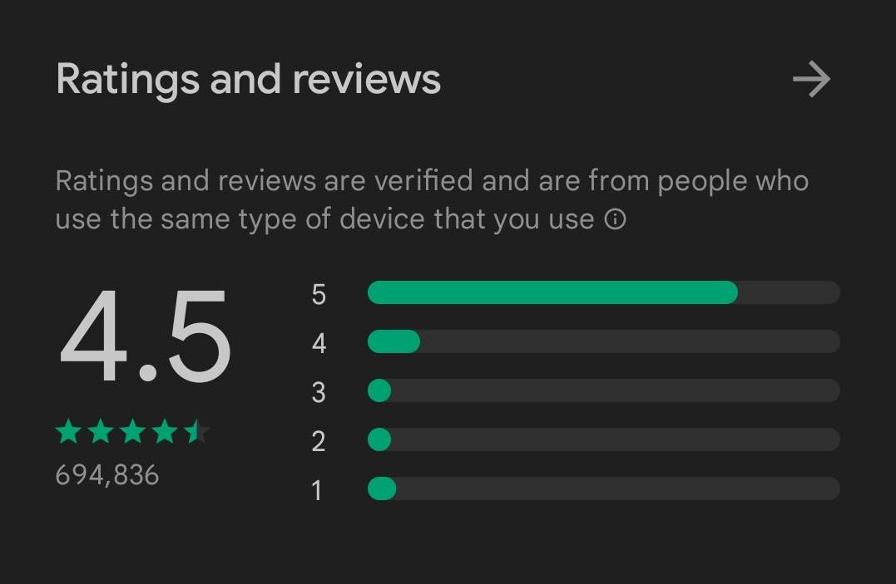
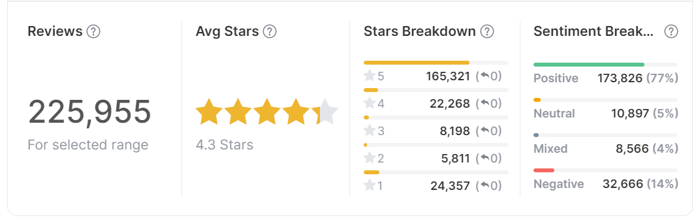

MKT/IMS 419 - Homework 2
Strong Presence of Reviews
To assess the review presence of Adidas and its competitor - Nike, I looked at each brand’s website as well as Amazon, one of the largest third-party e-commerce site. Both Adidas and Nike have strong review presences on their e-commerce sites and Amazon, with average ratings generally between 4 and 5 stars. They share common themes in positive and negative reviews, with customers appreciating product quality, performance, and design, while expressing concerns about sizing and potential counterfeit items. Review volume for both brands is high on Amazon, indicating their popularity and social proof.
Website
Adidas has a strong presence of reviews on their e-commerce site, featuring reviews for most of their products, with average ratings ranging between 4 and 5 stars. Customer feedback often highlights product quality, comfort, and style as key factors driving satisfaction. Common issues mentioned in negative reviews include sizing inconsistencies and occasional product defects. Customers who have purchased products from their online store have the opportunity to leave a review, which can be seen by other online shoppers. This creates a transparent shopping experience and helps potential customers make informed decisions about their purchases.

Looking at Adidas’s competitor, Nike’s e-commerce site also features customer reviews for a majority of its products. The average ratings for Nike products tend to be between 4 and 5 stars, similar to Adidas. Positive reviews often praise product performance, innovation, and design, while negative reviews may mention sizing issues, durability concerns, and occasional customer service problems.

Amazon
Both Adidas and Nike have a substantial presence on Amazon, with thousands of products listed across various categories.
Adidas has a strong presence on Amazon, with average ratings for their products typically between 4 and 5 stars. Review volume is high, reflecting the brand’s popularity and social proof. Common themes in positive reviews include product quality, comfort, and design, while negative reviews often mention sizing issues and concerns about counterfeit products.

Nike also has a significant presence on Amazon, with a wide range of products available across different categories. The average rating for Nike products tends to be between 4 and 5 stars, similar to Adidas. Nike generally receives positive feedback for product performance, innovation, and design. However, negative reviews may mention sizing concerns, durability issues, and concerns about counterfeit products.

App Reviews
Adidas has a great app!
Good news: Adidas does have an app on both Google Play Store and App Store! As an Android user, I will focus more on the brand’s app for Android available to install on Google Play Store. The app has an average rating of 4.6 from 394,433 reviews, indicating overall great satisfaction from the majority of users.


Taking a closer look at this, analysis from AppBot shows that among the aforementioned number of reviews, there are 68,741 ones with text, making up an average rating of 3.9 stars. About two-thirds of these specific reviews rated 5 stars and imply positive sentiment toward the app. This is a pretty strong evidence that Adidas has been working well on building up and maintaining the connection with its customers in an effort to increase customer satisfaction and generate product reviews.

…but not as good as Nike’s :(
Nike also has their own app on Google Play Store with quite a stronger presence than that of Adidas. Nike’s app has an average rating of 4.5 stars from 694,836 - roughly the same as Adidas but with almost twice as many users as Adidas! Analysis from AppBot also shows a more positive reaction from the users: 225,955 reviews with text that make an average rating of 4.3 stars (compared to 68,741 text reviews of 3.9 stars on average for Adidas). So, Adidas might have done a great job, but Nike definitely has done a way better job.



Customer Insight from Reviews
Valuable for various areas of improvement
Customer reviews oftentimes could provide valuable insights into product performance, customer preferences, and potential areas for improvement. By breaking down the average ratings by product category and subcategory, it would be possible to identify which products were resonating well with customers and which were underperforming. This analysis could help Adidas focus on improving lower-rated products or reevaluating its product assortment. Additionally, comparing Adidas’ average ratings with those of its competitors could provide a better understanding of the brand’s performance within the market. If Adidas’ average ratings were higher than its competitors’, this could indicate that the brand is successfully meeting or exceeding customer expectations. Conversely, if Adidas’ average ratings were lower than its competitors’, it might suggest that there are areas where the brand could improve to better compete in the market. Furthermore, analyzing the distribution of ratings and the review sentiment could reveal trends and patterns in customer feedback. A large number of negative reviews might indicate specific issues that need to be addressed, while a high proportion of positive reviews could highlight areas where the brand is excelling.
Conclusion
Overall, after engaging with various reviews of Adidas, I believe the brand is doing quite well on many aspects regarding the brand’s efforts in product development as well as customer service and engagement given that for the most parts it is quite similar to Nike, a big competitor. If I were to manage the brand, I probably would expand the efforts in overall presence across different e-commerce sites as well as social media channels to scale up the brand’s interaction and impact to equal to that of Nike. Other than that, I think with the current effort, overtime, Adidas would still be able to strengthen its stance in the market.